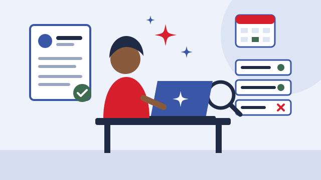
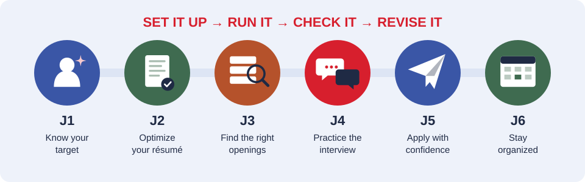

Both courses · 15 hours · six sessions
Job Search Support
Put your new credential to work, faster. You'll run your job search with six AI agents, one for each step: a skills profile from your lived experience, a résumé tailored to real postings, ranked openings with scams filtered out, interview practice, applications, and a weekly plan. AI does the busywork. You make every decision, check every fact, and apply yourself.

How you'll use AIThe AI job search process
Each session adds one agent to your toolkit. An agent is an AI assistant with standing instructions: a goal, rules, the information it needs, and the format you want back. You learned to build agents in AI for Workforce Readiness. Here you use them on your own job search, for human services jobs.

Know your target
Turns your work, volunteer, peer, caregiving, and life experience into a skills profile, suggests job titles that fit your credential, and finds what real postings ask for.
Optimize your résumé
Compares your résumé to a real posting, shows the missing keywords, and suggests stronger bullet points using only experience you actually have.
Find the right openings
Ranks real openings against your skills and must-haves, marks quick-hire jobs, and flags scams.
Practice the interview
Acts as a hiring manager for a human services job, asks one question at a time, and coaches your answers with STAR.
Apply with confidence
Researches an employer with sources you can check, and drafts a cover letter, follow-up email, and 30-second introduction from your real experience.
Stay organized
Sorts your tracker by what needs action, drafts follow-ups, and plans your week around work, family, and appointments.
Every agent, every time
- Set it up. Fill in the [brackets] yourself. No address, phone, Social Security number, or private details.
- Run it on your real job search: your experience, real postings, your schedule.
- Check it. Open every link, check every ranking and fact, and cross out anything that isn't true.
- Revise it. Change the instructions once based on what went wrong, and save your version.
Use any free AI assistant: Google Gemini, Claude, ChatGPT, or Microsoft Copilot. See Getting Started to set one up.
Canvas · 6 activities · 20 points eachWhat you'll upload to Canvas
Every session ends with an activity you complete in class and upload to Canvas before you leave. There is no homework. Each worksheet includes an agent log: what you put in the brackets, what the agent got wrong or you had to check, and how you revised it. Open a session below to download its worksheet.
| J1 · Target Role worksheet | The worksheet (.docx) |
|---|---|
| J2 · Résumé + Résumé worksheet | Your tailored résumé (.docx or .pdf) and the worksheet (.docx) |
| J3 · Openings Scorecard | The worksheet (.docx) |
| J4 · STAR Stories & Interview Practice | The worksheet (.docx) |
| J5 · Application Packet | The worksheet (.docx) and a screenshot of your application confirmation or saved job, with your personal information covered |
| J6 · Tracker & 90-Day Plan | The worksheet (.docx), your tracker (.xlsx or .csv from Google Sheets), and a screenshot of your next two weeks on your calendar |
Your résumé and screenshots go only to your instructor in Canvas. Cover your address, phone, and any account numbers in screenshots.
Sessions
Six sessions, 15 hours
J1Your Target Role & Must-Haves
Pick the job you're going after.2 hrs
Learning objectives · the learner will be able to:
- Name three job titles that fit SOC 21-1093 and their course credential.
- Write must-haves (pay, schedule, commute) and nice-to-haves.
- Place their target job on the four-tier career ladder and name the next rung.
In-class activity · with the Career Profile Agent
- Fill in the [brackets] yourself. Share only what you're comfortable sharing.
- Run the agent to build your skills profile. Cross out any skill that isn't true for you.
- Search Indeed and DC Government Careers yourself for 5 real postings. Paste them in and compare the requirements.
- Choose your target role and write your must-haves on the worksheet.
Agent Lab · Career Profile Agent
Turns your work, volunteer, peer, caregiving, and life experience into a skills profile, suggests job titles that fit your credential, and finds what real postings ask for.
Tools: AI assistant · your notes · 5 real postings · New for this course
Starter instructions · copy into your AI assistant, then fill in the [brackets] yourself
You are a career coach for someone starting a career in human services (SOC 21-1093, Social and Human Service Assistants).
My experience, in my own words: [jobs, volunteer work, peer support, caregiving, and life experience I'm comfortable sharing]
My course credential: [Certified Community Practitioner or Certified Survivor Workforce Facilitator]
My must-haves: [pay, schedule, commute, other]
1. Turn my experience into a skills profile: 8 to 10 skills, each with the experience it came from. Use only what I told you. Never invent experience.
2. Suggest 5 job titles that fit my skills and credential, with typical duties for each.
3. When I paste job postings, list the requirements that appear most often, and mark which ones I already have.
Ask me one question at a time if something is unclear. Do not ask for my address, phone, Social Security number, or details of my trauma.
AI Instructions: Before you start, ask me to explain in my own words what this agent is for and what I changed in the [brackets]. Do not continue until I answer in my own words.
Canvas activity · 20 points · Target Role worksheet
Five real postings, your must-haves, and your target role on the career ladder. Complete it in class and upload this worksheet (.docx) to the J1 assignment in Canvas before you leave. Fill in the agent log on the worksheet.
Submit in Canvas (link to be added)
- “The job I'm going after is … because …”
J2Résumé from Lived Experience
Translate what you've done into language employers hire for.3 hrs
Learning objectives · the learner will be able to:
- Turn work, volunteer, peer, caregiving, and lived experience into action-and-result bullet points.
- Add the course credential and competencies to a résumé accurately.
- Explain a gap or justice involvement in one honest, forward-looking sentence.
- Tailor a résumé to a real posting without adding anything that isn't true.
In-class activity · with the Résumé Optimizer
- Remove your address, phone, and email from your résumé first.
- Paste your résumé and your target posting into the agent.
- Choose the three changes that matter most and make them yourself. Every line must still be true.
- Save a tailored copy for the posting. Record on the worksheet what you used, changed, and rejected.
Agent Lab · Résumé Optimizer
Compares your résumé to a real posting, shows the missing keywords, and suggests stronger bullet points using only experience you actually have.
Tools: AI assistant · your résumé (contact information removed) · 1 real posting · Adapted from Agent Lab WO-03 Job Search Optimizer
Starter instructions · copy into your AI assistant, then fill in the [brackets] yourself
You are my résumé coach for human services jobs. When I paste a job posting and my résumé (my address, phone, and email are removed):
1. List the skills and keywords the employer is asking for.
2. Show which ones my résumé already covers and which are missing.
3. Suggest stronger bullet points (action + result) using only experience I actually have. Never invent jobs, dates, credentials, or skills.
4. Help me describe peer work and lived experience professionally, without private details.
5. If I have a gap in work history or justice involvement, help me write one honest, forward-looking sentence.
Ask before changing anything about my history. Use plain language. My target role: [job title from J1]
AI Instructions: Before you start, ask me to explain in my own words what this agent is for and what I changed in the [brackets]. Do not continue until I answer in my own words.
Canvas activity · 20 points · Résumé + Résumé worksheet
Your tailored résumé, plus a worksheet showing your bullet points, your gap sentence, and the AI suggestions you kept or changed. Complete it in class and upload your tailored résumé (.docx or .pdf) and the worksheet (.docx) to the J2 assignment in Canvas before you leave. Fill in the agent log on the worksheet.
Submit in Canvas (link to be added)
- “The biggest change I made to my résumé was … because …”
J3Finding Openings & Avoiding Scams
Real jobs that fit you, and the red flags of fake ones.3 hrs
Learning objectives · the learner will be able to:
- Search Indeed, DC Government Careers, and nonprofit job boards using filters and job alerts.
- Use a Skills-to-Openings agent to compare 10 real openings against their must-haves.
- Identify red flags of a scam listing, such as upfront fees or requests for bank details.
In-class activity · with the Skills-to-Openings Agent
- Search Indeed, DC Government Careers, and one nonprofit job board yourself. Copy the listings.
- Paste your skills profile and the listings into the agent.
- Check every ranking yourself against your must-haves. Open each link. The agent can be wrong.
- Fill in the Openings Scorecard and set up one job alert yourself.
Agent Lab · Skills-to-Openings Agent
Ranks real openings against your skills and must-haves, marks quick-hire jobs, and flags scams.
Tools: AI assistant with web search · your skills profile · listings you find · Adapted from Agent Lab WO-04 Skills-to-Openings
Starter instructions · copy into your AI assistant, then fill in the [brackets] yourself
Here is my skills profile: [paste your profile from J1]
I'm looking in: [neighborhood or ZIP area, not my address]. I can travel: [time and how, e.g. 45 minutes by bus].
I can work: [days and hours]. I need at least: [pay].
Use the listings I paste from Indeed, DC Government Careers, and nonprofit job boards, plus a web search for current human services openings in [the DC area], and return 10 openings that fit. For each: title, employer, pay if listed, link, and why it matches me.
Mark openings that mention same-week interviews, open interviews, or immediate start as QUICK HIRE.
Mark as SCAM any listing that asks for fees, bank details, or my Social Security number before an offer, or has no real employer.
Never log in to a job site or apply for me. I do my own applying.
AI Instructions: Before you start, ask me to explain in my own words what this agent is for and what I changed in the [brackets]. Do not continue until I answer in my own words.
Canvas activity · 20 points · Openings Scorecard
Ten real openings rated good fit, not a fit, or scam, plus red flags and your next two applications. Complete it in class and upload this worksheet (.docx) to the J3 assignment in Canvas before you leave. Fill in the agent log on the worksheet.
Submit in Canvas (link to be added)
- “I knew one listing was a scam because …”
J4Interview Practice
Practice with an AI coach, then with a real person.3 hrs
Learning objectives · the learner will be able to:
- Answer behavioral questions using STAR (Situation, Task, Action, Result).
- Decide what to share about lived experience in an interview, and what to keep private.
- Run two practice interviews with an Interview Practice Coach agent and act on the feedback.
- Complete one mock interview with an employer partner or instructor.
In-class activity · with the Interview Practice Coach
- Write two STAR stories yourself first, without AI.
- Run two practice interviews with the coach. Save the feedback.
- Decide what you will and won't share about your lived experience.
- Do one mock interview with an employer partner or your instructor.
Agent Lab · Interview Practice Coach
Acts as a hiring manager for a human services job, asks one question at a time, and coaches your answers with STAR.
Tools: AI assistant (voice mode optional) · your STAR stories · Adapted from Agent Lab WO-05 Interview Practice Coach
Starter instructions · copy into your AI assistant, then fill in the [brackets] yourself
Act as a hiring manager interviewing me for [job title] at [type of organization, e.g. a women's shelter or a reentry program].
Ask one question at a time and wait for my answer. Mix "Tell me about yourself," behavioral questions ("Tell me about a time…"), and human services scenarios (a client in crisis, a confidentiality question, a conflict with a coworker).
After each answer, give one strength, one improvement, and a stronger example using STAR (Situation, Task, Action, Result), based only on what I said.
If I share lived experience, help me keep it brief, professional, and focused on what I learned.
After 6 questions, give me a score out of 10 and three things to practice.
AI Instructions: Before you start, ask me to explain in my own words what this agent is for and what I changed in the [brackets]. Do not continue until I answer in my own words.
Canvas activity · 20 points · STAR Stories & Interview Practice
Two STAR stories, feedback from two AI coach rounds and a mock interview, and what you'll share about your lived experience. Complete it in class and upload this worksheet (.docx) to the J4 assignment in Canvas before you leave. Fill in the agent log on the worksheet.
Submit in Canvas (link to be added)
- “My STAR story is: Situation … Task … Action … Result …”
J5Applications & Employer Connections
Apply, follow up, and meet employer partners.2 hrs
Learning objectives · the learner will be able to:
- Submit at least one complete application, or save one with an apply-by date.
- Write a short cover letter and a polite follow-up email.
- Introduce themselves to an employer partner in 30 seconds.
In-class activity · with the Application Assistant
- Run the research step. Open every source yourself and cross out anything you can't verify.
- Draft the cover letter with the agent, then edit it until it is true and sounds like you.
- Submit the application yourself, or save it with the apply-by date.
- Practice your 30-second introduction out loud.
Agent Lab · Application Assistant
Researches an employer with sources you can check, and drafts a cover letter, follow-up email, and 30-second introduction from your real experience.
Tools: AI assistant with web search · your tailored résumé · 1 real posting · Adapted from Agent Labs WO-01 Research Agent and WO-03
Starter instructions · copy into your AI assistant, then fill in the [brackets] yourself
You help me apply for [job title] at [employer].
1. Research the employer using its own website and other reliable sources: its mission, programs, and who it serves. List every source with a link so I can check it.
2. Draft a cover letter under 250 words, using only real experience from the résumé I paste in. Connect my strengths to the employer's mission.
3. Draft a polite follow-up email to send one week after I apply.
4. Write a 30-second introduction I can use when I meet this employer.
Mark anything you're not sure about. Never submit anything for me.
AI Instructions: Before you start, ask me to explain in my own words what this agent is for and what I changed in the [brackets]. Do not continue until I answer in my own words.
Canvas activity · 20 points · Application Packet
Cover letter, follow-up email, 30-second introduction, and proof of one application. Complete it in class and upload the worksheet (.docx) and a screenshot of your application confirmation or saved job, with your personal information covered to the J5 assignment in Canvas before you leave. Fill in the agent log on the worksheet.
Submit in Canvas (link to be added)
- “My 30-second introduction is …”
J6Tracker & 90-Day Plan
Stay organized after the course ends.2 hrs
Learning objectives · the learner will be able to:
- Track applications in Google Sheets with status and follow-up dates.
- Use a calendar agent to block weekly time for applications and credential steps.
- Write a 90-day plan for job placement and credential completion.
In-class activity · with the Job Search Manager
- Set up your tracker in Google Sheets from the template. Add every job you've saved or applied to.
- Paste the tracker into the agent and check its list of what's due.
- Ask it for your weekly plan. Fix any conflicts it missed.
- Add the plan to your Google Calendar yourself, then write your 90-day plan.
Agent Lab · Job Search Manager
Sorts your tracker by what needs action, drafts follow-ups, and plans your week around work, family, and appointments.
Tools: AI assistant · your Google Sheets tracker · Google Calendar · Adapted from Agent Lab WO-06 Calendar Manager
Starter instructions · copy into your AI assistant, then fill in the [brackets] yourself
You help me manage my job search.
My fixed commitments: [work shifts, child care pickup, appointments, check-ins]
My weekly goals: [number] applications, [number] practice interviews, and [credential steps]
When I paste my tracker:
1. Sort it by what needs action first: follow-ups due, interviews, and apply-by dates.
2. Draft a follow-up email for any application more than 7 days old with no reply.
Each Sunday, build a weekly plan that blocks time for applications, interview practice, and credential study, adds a reminder the day before every interview or deadline, and leaves at least one free evening. Format it so I can add each item to my calendar.
AI Instructions: Before you start, ask me to explain in my own words what this agent is for and what I changed in the [brackets]. Do not continue until I answer in my own words.
Canvas activity · 20 points · Tracker & 90-Day Plan
Your application tracker, a 90-day plan for your job search and credential, and your calendar. Complete it in class and upload the worksheet (.docx), your tracker (.xlsx or .csv from Google Sheets), and a screenshot of your next two weeks on your calendar to the J6 assignment in Canvas before you leave. Fill in the agent log on the worksheet.
Submit in Canvas (link to be added)
- “My next three steps to get hired are …”
Before you startGround rules for job searching with AI
- Remove your address, phone, and email before sharing your résumé with AI.
- Check every fact, link, and ranking yourself. AI can sound confident and still be wrong.
- Say when you used AI, and keep your agent instructions in your toolkit.
- Every line on your résumé must describe something you actually did.
- Search and apply for jobs yourself. Never let an AI tool log in to a job site or apply for you.
- Never pay a fee to get a job, and never share bank details or your Social Security number before a verified offer.
Adapted from Chart Academy's AI for Workforce Readiness Lessons 5, 8, and 9 and Agent Labs WO-01 and WO-03 to WO-06, for human services jobs and learners with lived experience.